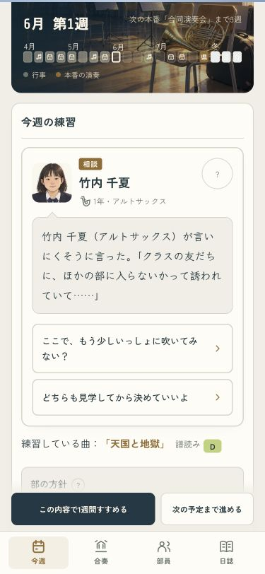
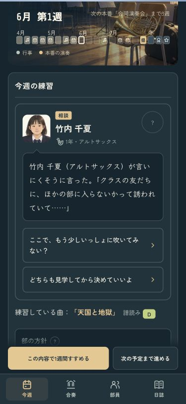
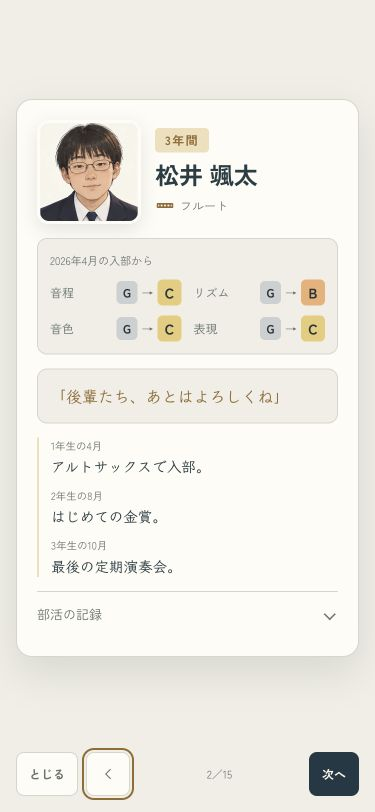
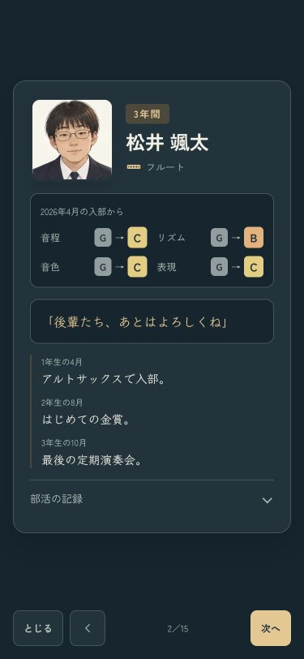
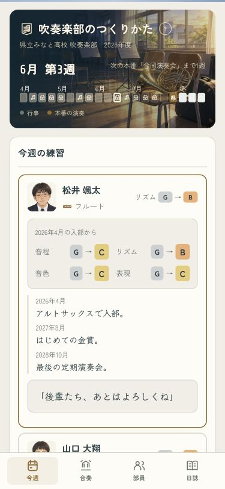
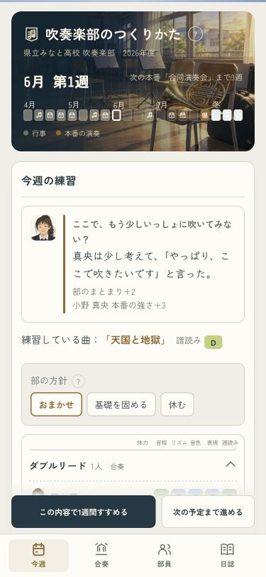

顔から伝わる相談と卒業式
相談は、顔と名前、本人の話、返答の順に。卒業式は、顔と成長、最後のひとことを中心に整えました。名前・原画・会話・出来事は同じです。
相談 · 375px
顔は56px。返答は幅いっぱいにし、答え方の説明は「？」へまとめました。
ライト
ダーク
卒業式 · 375px
入部時からの4つのランクと、最後のひとこと。「部活の記録」は開いて読めます。読むために触れると自動送りが止まり、下のボタンで前後に移れます。
ライト
ダーク
ふり返りの一覧
卒業生を開いたところ
相談に答えた後